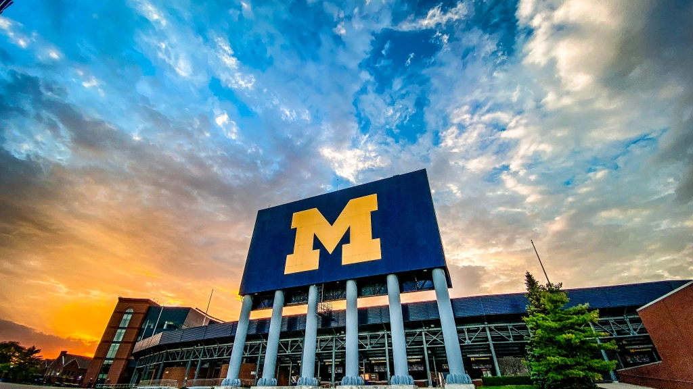

Resume
Download PDF
University of Michigan, Ann Arbor | GPA: 3.87/4.00 | May 2021
Honors: University Honors – 8 terms 2017-2021; Angell Scholar – Winter 2019 & Winter 2021; Scholar Athlete – 2019-2021
Relevant coursework: Programming for Accessibility, Social Media in Organizations, Needs Assessment and Usability Evaluation, Interaction Design Studio, Putting the H in HCI, Building Interactive Applications, Marketing Management, Technology and Operations Management, Principles of Accounting, Cognitive Science and Psychology, Spanish Language, Statistics, Calculus, Sociology
UX Design: Adobe Illustrator, Adobe Photoshop, Adobe XD, Figma, affinity analysis, usability testing, interaction design, social media
Web Development and Digital Marketing: HTML5/CSS, JavaScript, WordPress, Django, Google Analytics
Data Analytics: Python, SQL, Excel, R Studio
Ann Arbor, MI
Full Time, August 2021 - Present
Ann Arbor, MI
Summer 2020
Philadelphia, PA
Summer 2020

Malvern, PA
Summer 2018 and Summer 2019
2018-2021 | 2019 & 2021 National Champions
Fall 2017-2021 | 2019 National Champions
September 2017 - May 2021
November 2013-April 2020
Summer 2017, 2018, 2019